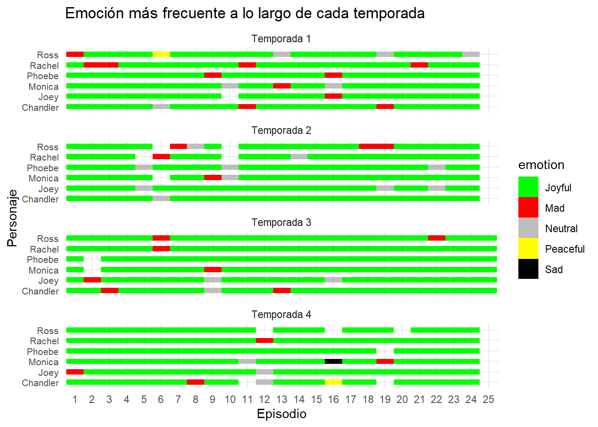

# Importar librerías
library(DBI)
library(tidyverse)── Attaching core tidyverse packages ──────────────────────── tidyverse 2.0.0 ──
✔ dplyr 1.1.4 ✔ readr 2.1.4
✔ forcats 1.0.0 ✔ stringr 1.5.1
✔ ggplot2 3.4.4 ✔ tibble 3.2.1
✔ lubridate 1.9.3 ✔ tidyr 1.3.0
✔ purrr 1.0.2
── Conflicts ────────────────────────────────────────── tidyverse_conflicts() ──
✖ dplyr::filter() masks stats::filter()
✖ dplyr::lag() masks stats::lag()
ℹ Use the conflicted package (<http://conflicted.r-lib.org/>) to force all conflicts to become errorslibrary(ggplot2)
# Conectar con base de datos
con <- dbConnect(RSQLite::SQLite(), dbname = ":memory:")
# Volcar archivos csv en tablas SQL
dbWriteTable(con, "friends", read.csv("friends.csv"))
dbWriteTable(con, "friends_emotions", read.csv("friends_emotions.csv"))
# Construir query
query <-
"SELECT speaker, season, episode, emotion
FROM(
SELECT speaker, f.season, f.episode, emotion, COUNT(*) AS emotion_freq
FROM friends f
INNER JOIN friends_emotions fe
ON f.season = fe.season
AND f.episode = fe.episode
AND f.scene = fe.scene
AND f.utterance = fe.utterance
WHERE speaker IN ('Chandler Bing', 'Joey Tribbiani', 'Monica Geller', 'Phoebe Buffay', 'Rachel Green', 'Ross Geller')
GROUP BY speaker, f.season, f.episode, emotion)
GROUP BY speaker, season, episode"
# Volcar tabla SQL en un dataframe de R
df <- dbGetQuery(con, query)
# Eliminar apellidos para no condensar tanto el gráfico
rep_str <- c('Ross Geller'='Ross',
'Rachel Green'='Rachel',
'Phoebe Buffay'='Phoebe',
'Monica Geller'='Monica',
'Joey Tribbiani'='Joey',
'Chandler Bing'='Chandler')
df$speaker <- str_replace_all(df$speaker, rep_str)
# Mapear los estados de ánimo a colores para visualizarlos
color_mapping <- c("Joyful"="green", "Neutral"="grey", "Sad"="black", "Mad"="red", "Powerful"="blue", "Peaceful"="yellow")
season_labels <- function(levels) {
paste("Temporada", levels)
}
# Plotear usando ggplot2
p <- ggplot(df, aes(x = factor(episode), y = factor(speaker), fill = emotion)) +
geom_tile(aes(width = 1, height = 0.5)) +
scale_fill_manual(values = color_mapping) +
labs(x = "Episodio", y = "Personaje", title = "Emoción más frecuente a lo largo de cada temporada") +
theme_minimal() +
theme(axis.text.y = element_text(size = 8)) +
facet_wrap(~ season, ncol = 1, labeller = labeller(season = season_labels))
print(p)